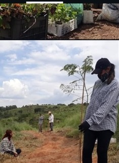
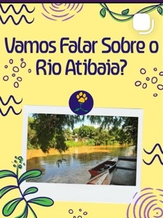

Ação ambiental
Plantio e cuidado com áreas verdes
Atividades de plantio e mobilização em torno da vegetação e da recuperação ambiental.
AÇÕES E INICIATIVAS
Registros de atividades, campanhas e encontros presentes nas publicações da PROESP.
EM MOVIMENTO

Atividades de plantio e mobilização em torno da vegetação e da recuperação ambiental.

Compartilhamento de conhecimentos e iniciativas de educação ambiental.
Divulgação de debates e ações públicas em defesa de causas ambientais.
ATUALIZAÇÕES
Acesse o perfil oficial para consultar informações atualizadas diretamente com a PROESP.